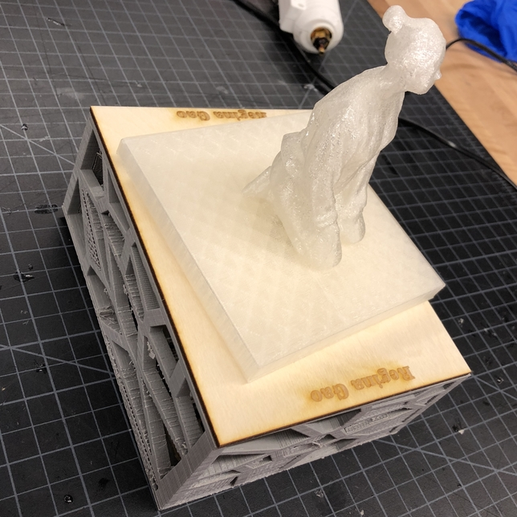
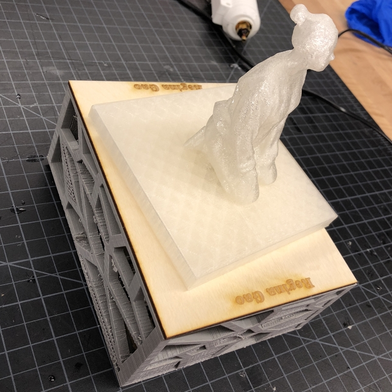

My design for the final project is a box with self rotating lid.
First I let my friend scan me and use mesh mixer to edit the model. Then I printed it out using the 3D printer.
I set up an electro circuit of the servo motor on arduino board and I change code on the computer to make the spinning speed faster. After the code is changed, I can just use the batteries.
Then I laser cut my name on the lid of the board and 3D printed a box to contain the arduino board and wires..
For the last step, I glued my 3D printing on the servo so it can spin. However, the statue often fell from the lid when spinning too fast.
 
